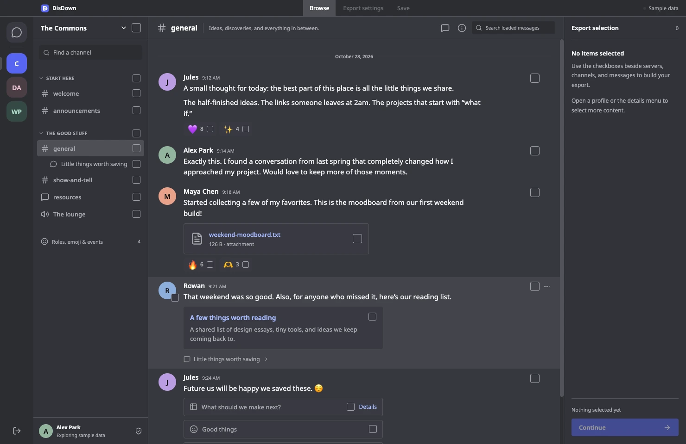
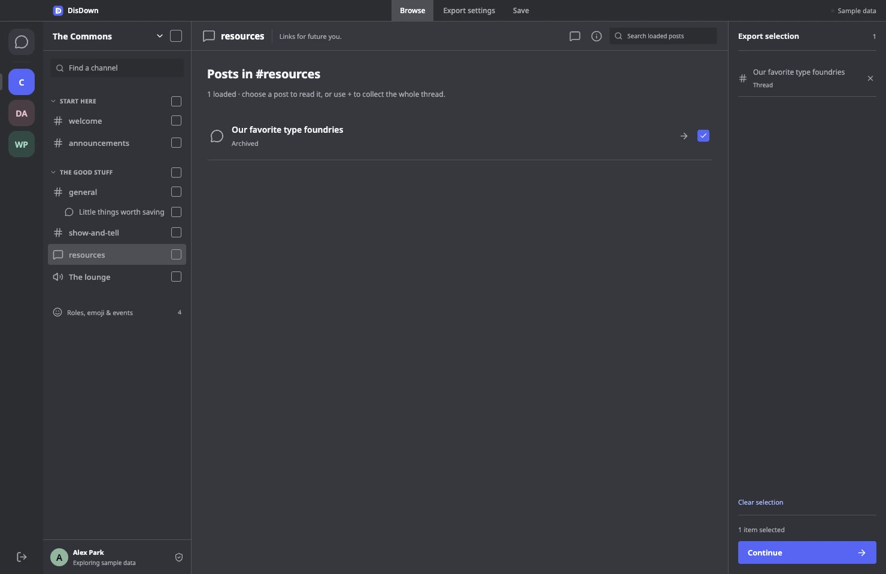
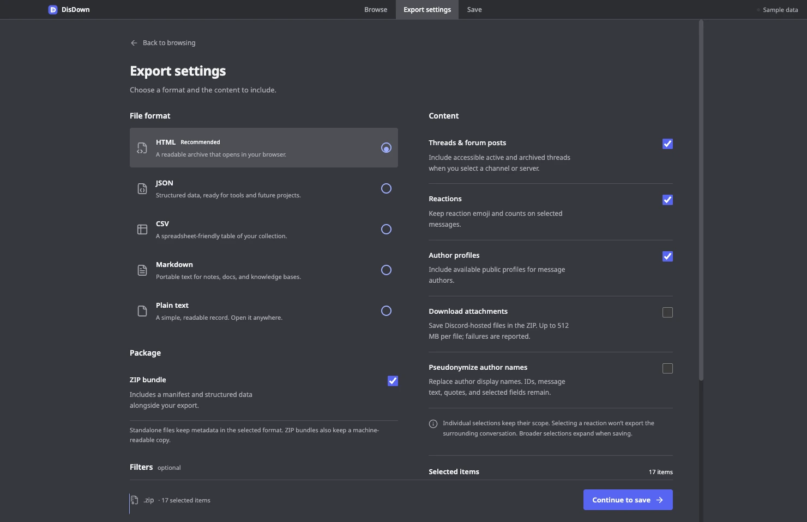

Places you know.
Servers, categories, channels, direct messages, and group conversations you can access.
Some things are worth holding on to. Choose the Discord conversations, shared files, and little details you want to keep. DisDown saves them on your computer.
Get DisDownFree & open source.
For macOS, Windows, and Linux.

Keep what matters at the scale that makes sense. Browse familiar places, build your selection as you go, and carry the context with you.
Servers, categories, channels, direct messages, and group conversations you can access.
Messages, reactions, accessible threads, and forum or media posts. Open a post, read it, and choose what stays.
Attachments, embeds, stickers, polls, profiles, roles, emoji, and events. Inspect an object to select individual returned fields.
A single reaction stays a single reaction. A wider selection expands as it saves. Overlapping choices are deduplicated, so you can collect naturally.
Accessible active and archived posts are paged in the app. Your permissions still decide what DisDown can see.
Explore how selection works
A browser-readable archive. Structured data for a project. Text for your notes. Choose the format that fits what comes next.
The preview couldn’t load. You can still download the sample below.
Choose a ZIP bundle to include downloaded attachments, a manifest, and structured data alongside your chosen format. Keep media optional; keep your destination local.
Try all five sample formatsMove from browsing to a saved archive with clear scope at every step.

Use UTC date ranges, a message phrase, author IDs, or a matching-message limit per channel. Choose whether to include accessible threads, reaction counts, and profiles.
The in-app folder browser follows your theme. Pick a destination, create a folder if you need one, and confirm before replacing an existing file.
Follow collection, media, and writing progress. Cancel when you need to; temporary files are cleaned up when a job stops or fails.
In user-token sessions, DisDown follows your account’s light, dark, darker, midnight, preset, or custom gradient appearance. Browsing, export settings, and the folder picker share the same theme.
Try the website’s three themes above. Sample and bot sessions use the app’s standard dark theme.
No DisDown account.
No upload step.
No cloud archive to manage.
The app reads directly from Discord after you consent. Your token stays in memory and is dropped on disconnect or exit. DisDown uses no backend or telemetry.
You decide what to keep and where to save it. Protect the files you create, and only archive content you have permission to keep.
Read the privacy detailsDisDown is independent software, with real access limits. Make the choice with the whole picture.
Discord prohibits automating normal user accounts outside its OAuth2/bot API and says this can lead to account termination. User-token mode is unsupported by Discord; access can change. DisDown requires explicit consent and acknowledgement in the app.
Read Discord’s policyA bot can read permitted data in servers it belongs to. It cannot mirror your personal servers, DMs, or group chats. Full message bodies may require the Message Content privileged intent.
You can explore the sample workspace without connecting an account. This website never asks for a Discord token.
It saves the accessible data Discord returns for the connected account and your chosen scope. It cannot recover deleted messages, unseen private threads, unavailable media, or content blocked by permissions or API restrictions. It does not record voice or video calls, streams, or presence history.
Permission failures, API errors, expired attachments, and export limits are reported. A finished save does not prove that Discord supplied every possible piece of account content.
A job is limited to 250,000 distinct messages and 512 MB per downloaded attachment. Use date ranges or smaller selections for larger histories. Choose a ZIP bundle when downloading attachments; links to media that you do not download may expire.
DisDown does not send messages, react, edit, delete, join servers, or bypass permissions. API calls are GET-only. Credentials are used in memory for direct HTTPS requests to Discord and are not saved to disk.
Some user-account features use undocumented endpoints that Discord may change. The app shows access notices when requests fail. Only enter credentials you own or are authorized to use, directly in the desktop app.
No. “Pseudonymize author names” changes author display names only. Message text, IDs, quotes, and individually selected fields may still identify people. Review the archive before sharing it.
User-token sessions read account appearance after consent. Light, dark, darker, midnight, system, the 24 current presets, and returned custom gradients are supported. Use “Sync Discord theme” after changing your Discord appearance; DisDown also refreshes when its window regains focus, at most once per minute.
Bot and sample sessions use standard dark. If appearance is unavailable, the app stays usable and shows a notice. DisDown does not change your Discord settings or persist the response.
Yes. DisDown is free, open-source software under the MIT license. Browse the source on GitHub, check the verification matrix, or report an issue. Keep tokens, private message bodies, and personal archives out of public reports.
DisDown v0.2.0. Free and open source.
Choose the download for your computer.
Apple Silicon or Intel
64-bit
64-bit · Graphical session
Before connecting, read the account risks and access limits. You can try the sample workspace first.